Rogue
Rogue is Calamity's throwing class, built around a stealth bar that powers special stealth strikes. This modpack merges it with Thorium's thrower, which adds techniques and exhaustion.
Each stage splits weapons and accessories two ways: spam picks for throwing nonstop, stealth picks for landing stealth strikes.
Markers: † risky to get · C crowd control · + support · ≤ has upgrades · * tedious to get · ν needs the Void subclass · Ω use together · Δ changed by Calamity · ≈ placed by rarity, may be a stage off · italic = Revengeance Mode or higher. Numbers in brackets are base damage. All-class armor follows the class sets on each armor line.
Pre-Hardmode
1 Pre-Eye of Cthulhu
Bosses The Grand Thunder Bird
The Grand Thunder Bird King Slime
King Slime Desert Scourge
Desert Scourge Giant Clam
Giant Clam Lepus
Lepus Eye of Cthulhu
Eye of Cthulhu
- Spam weapons
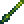
Cactus Needle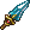
Crystalline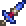
Enchanted Knife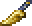
Gilded Dagger /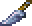
Gleaming Dagger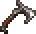
Iron Francisca /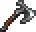
Lead Tomahawk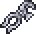
Lasting Pliers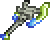
Vibrant Tomahawk
- Stealth weapons
- Crystalline
- Gilded Dagger / Gleaming Dagger
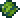
Nasty Cholla
- Armor
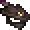
Desert Prowler armor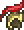
Gladiator armor *
All-class Ancient Shadow armor *
Ancient Shadow armor * Frigid armor *
Frigid armor * Gold armor /
Gold armor /  Platinum armor
Platinum armor Lead armor
Lead armor Thorium armor
Thorium armor Vespera armor ν
Vespera armor ν
- Spam accessories
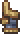
Auto Clicker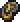
Coin of Deceit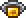
Topaz Ring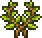
Wreath
- Stealth accessories
- Coin of Deceit
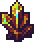
Scuttler's Jewel- Topaz Ring
- Wreath
- Buffs
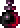
Shadow Potion
2 Pre-Eater of Worlds / Brain of Cthulhu
Bosses Glowmoth
Glowmoth Crabulon
Crabulon
 Eater of Worlds or Brain of Cthulhu
Eater of Worlds or Brain of Cthulhu
- Spam weapons
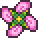
Blooming Shuriken- Enchanted Knife
- Mothwing Dagger
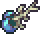
Mycoroot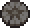
Sand Dollar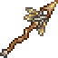
Zephyr's Ruin
- Stealth weapons
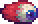
Bouncing Eyeball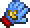
Gel Glove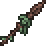
Goblin War Spear- Mothwing Dagger
- Sand Dollar
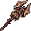
Scourge of the Desert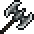
Steel Throwing Axe- Zephyr's Ruin
- Techniques
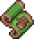
Decoy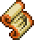
Sprint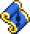
Hidden Blade
- Support
 Brittle Star Staff (defensive)
Brittle Star Staff (defensive)
- Armor
- Flight armor
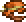
Sandstone armor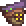
Sulphurous armor Victide armor
Victide armor
All-class- Ancient Shadow armor *
- Frigid armor
- Gold armor / Platinum armor
- Lead armor †
- Vespera armor ν
- Spam accessories
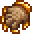
Bone Grip- Coin of Deceit
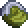
Putrid Coin /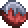
Bloodstained Coin Ω ≤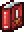
Rogue 101 (Guide to Expert Throwing)
- Stealth accessories
- Bone Grip
- Coin of Deceit
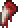
Rotten Dogtooth- Rogue 101 (Guide to Expert Throwing)
- Buffs
- Shadow Potion
3 Pre-Hive Mind / Perforators
Bosses Queen Jellyfish
Queen Jellyfish Viscount
Viscount
 The Hive Mind or The Perforators
The Hive Mind or The Perforators
- Spam weapons
- Aquaite Knife
- Blooming Shuriken
- Dracula Fang
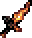
Infernal Kris- Mycoroot
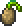
Pod Bomb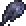
Sludge Splotch
- Stealth weapons
- Aquaite Knife
- Dracula Fang
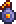
Meteorite Cluster Bomb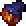
Meteor Fist- Sludge Splotch
- Techniques
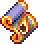
Meteor Stomp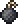
Smoke Bomb- Sprint
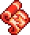
Sticky Explosive
- Support
- Brittle Star Staff (defensive)
 Slime Gun +
Slime Gun +
- Armor
- Flight armor
- Sandstone armor
- Sulphurous armor
All-class Crimson armor
Crimson armor Depth Diver's armor
Depth Diver's armor Shadow armor
Shadow armor
- Spam accessories
- Bone Grip
- Coin of Deceit
- Rogue 101
- Stealth accessories
- Bone Grip
- Coin of Deceit
- Rotten Dogtooth
- Rogue 101
- Buffs
- Shadow Potion
4 Pre-Skeletron
Bosses Queen Bee
Queen Bee Putrid Pinky
Putrid Pinky Deerclops
Deerclops Pharaoh's Curse
Pharaoh's Curse Skeletron
Skeletron
- Spam weapons
- Dracula Fang
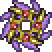
Forbidden Maelstrom ν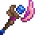
Goopwood Split ν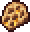
Hardened Honeycomb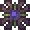
Rot Ball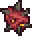
Tooth Ball- Sludge Splotch
- P-LSR: Aerial Tracker
- Turbulance
- Stealth weapons
- Dracula Fang
- Hardened Honeycomb
- Sludge Splotch
- P-LSR: Aerial Tracker
- Turbulance
- Techniques
- Meteor Stomp
- Smoke Bomb
- Sprint
- Sticky Explosive
- Support
 Aestheticus +
Aestheticus +- Brittle Star Staff (defensive)
- Armor
 Aerospec armor
Aerospec armor- Flight armor
- Sulphurous armor
All-class- Crimson armor
- Depth Diver's armor
- Shadow armor
- Spam accessories
- Bloodstained Glove / Filthy Glove
- Coin of Deceit
- Rogue 101
- Stealth accessories
- Bloodstained Glove / Filthy Glove
- Coin of Deceit
- Rotten Dogtooth
- Rogue 101
- Buffs
- Flask of Poison
- Hydration Potion
- Shadow Potion
5 Pre-Slime God
Bosses Turkor the Ungrateful
Turkor the Ungrateful Granite Energy Storm
Granite Energy Storm Buried Champion
Buried Champion The Slime God
The Slime God
- Spam weapons
- Bronze Throwing Axe
- Champion's God Hand
- Enchanted Axe
- Forbidden Maelstrom ν
- Granite Throwing Axe
- Goopwood Split ν
- Kylie
- Shinobi Blade
- P-LSR: Aerial Tracker
- Stealth weapons
- Lionfish
- Metal Monstrosity
- Pocket Energy Storm
- Shinobi Blade
- P-LSR: Aerial Tracker
- Wack Wrench
- Techniques
- Meteor Stomp
- Smoke Bomb
- Soul Pulse
- Sprint
- Support
- Aestheticus +
- Brittle Star Staff (defensive)
- Armor
- Aerospec armor
- Bronze armor
All-class Darksteel armor
Darksteel armor- Depth Diver's armor
 Granite armor
Granite armor
- Spam accessories
- Bloodstained Glove / Filthy Glove
- Canteen
- Coin of Deceit
- Olympic Torch
- Spartan Sandals
- Rogue 101
- Stealth accessories
- Bloodstained Glove / Filthy Glove
- Coin of Deceit
- Mirage Mirror
- Rotten Dogtooth
- Spartan Sandals
- Rogue 101
- Buffs
- Assassin Potion
- Flask of Poison
- Hydration Potion
- Shadow Potion
6 Pre-Wall of Flesh
Bosses The Excavator
The Excavator The Advisor
The Advisor Star Scouter
Star Scouter Wall of Flesh
Wall of Flesh
- Spam weapons
- Bronze Throwing Axe
- Champion's God Hand
- Enchanted Axe
- Forbidden Maelstrom ν
- Gauss Flinger
- Gel Dart
- Granite Throwing Axe
- Goopwood Split ν
- Light's Anguish / Embowelment
- Shinobi Blade
- P-LSR: Aerial Tracker
- Stealth weapons
- Lionfish
- Metal Monstrosity
- Pocket Energy Storm
- Shinobi Blade
- P-LSR: Aerial Tracker
- Wack Wrench
- Techniques
- Meteor Stomp
- Smoke Bomb
- Soul Pulse
- Sprint
- Support
- Aestheticus +
- Brittle Star Staff (defensive)
- Armor
- Bronze armor
 Statigel armor
Statigel armor
All-class- Darksteel armor
- Depth Diver's armor
- Spam accessories
- Canteen
- Coin of Deceit
- Magneto Grip
- Olympic Torch
- Spartan Sandals
- Rogue 101
- Stealth accessories
- Coin of Deceit
- Magneto Grip
- Mirage Mirror
- Rotten Dogtooth
- Spartan Sandals
- Rogue 101
- Buffs
- Assassin Potion
- Flask of Poison
- Hydration Potion
- Shadow Potion
Hardmode
The modpack's wiki has not written Rogue lists past Pre-Hardmode. From here the class picks come from the Calamity Mod wiki's class setups for the matching tier, so they cover vanilla and Calamity items only. The pack rebalances some of them, so check tooltips. All-class armor still comes from the modpack's wiki. Δ marks an item Calamity changes.
The "Other mods" lines are read from the pack's installed mod files: thrown weapons and class armor from Thorium, whose thrower class this pack folds into Rogue, plus Catalyst, Clamity and the other add-ons. Each is placed at the stage its recipe or boss drop first becomes available under this pack's changes. Numbers are base damage after the pack's balance changes, and a boss name means the item drops there. ≈ marks an item placed by rarity alone, which can be a stage off.
7 Pre-Mechanical Bosses
Bosses Borean Strider
Borean Strider Fallen BeholderDreadnautilus
Fallen BeholderDreadnautilus Queen Slime
Queen Slime Cryogen
Cryogen

 first mechanical boss
first mechanical boss
- Spam weapons
- Cobalt Kunai
- Cursed Dagger / Ichor Spear
- Ice Star
- Palladium Javelin
- Prismalline
- Stealth weapons
- Prismalline
- Palladium Javelin
- Ice Star
- Equanimity
- Cursed Dagger
- Armor
- Titan Heart armor
All-class Crystal Assassin armor
Crystal Assassin armor Dragon's armor /
Dragon's armor /  Flesh armor
Flesh armor Durasteel armor
Durasteel armor Mollusk armor †
Mollusk armor †
- Spam accessories
- Rogue Emblem
- Stealth accessories
- Mirage Mirror
- Coin of Deceit
- Filthy Glove
- Buffs
- Shadow Potion
- Flask of Cursed Flames / Flask of Ichor
- Other mods' weapons
- Thorium
- Volt Hatchet (96)
- Lodestone Javelin (85)
- The Cryo-Fang (82, Borean Strider)
- Durasteel Throwing Spear ≈ (70)
- Hell Roller (66, Fallen Beholder)
- Venom Kunai ≈ (66)
- Kunai ≈ (60)
- Hot Pot ≈ (54)
- Omniwrench ≈ (52)
- Legion Ornament ≈ (51)
- Morel Grenade (48)
- Shadow-Tipped Javelin (48)
- Captain's Poignard (41)
- Fungal Popper (41)
- Eviscerating Claw (39)
- Palladium Throwing Spear ≈ (36)
- Cobalt Throwing Spear ≈ (34)
- Chum ≈ (26)
- Other mods' class armor
- Thorium
- Plague Doctor's set
8 Post-Mechanical Boss 1
Bosses Aquatic Scourge
Aquatic Scourge

 second mechanical boss
second mechanical boss
- Spam weapons
- Blazing Star
- Cobalt Kunai
- Ice Star
- Palladium Javelin
- Prismalline
- Scourge of the Seas
- Stealth weapons
- Scourge of the Seas
- Palladium Javelin
- Ice Star
- Equanimity
- Blazing Star
- Armor
- Titan Heart armor
- Monk armor Δ
All-class- Crystal Assassin armor
- Dragon's armor / Flesh armor
- Durasteel armor
- Mollusk armor †
- Spam accessories
- Ruin Medallion
- Rogue Emblem
- Stealth accessories
- Ruin Medallion
- Mirage Mirror
- Electrician's Glove
- Buffs
- Shadow Potion
- Flask of Cursed Flames / Flask of Ichor
- Other mods' weapons
- Thorium
- Axe Blade (67)
- Shadow-Purge Caltrop ≈ (55)
- Swamp Rot ≈ (55)
- Clockwork Bomb (50)
Thorium Bosses Reworked- Handheld Rocket ≈ (63)
Clamity- Molten Piercer ≈ (144)
9 Post-Mechanical Boss 2
Bosses Brimstone Elemental
Brimstone Elemental

 third mechanical boss
third mechanical boss
- Spam weapons
- Adamantite Throwing Axe
- Blazing Star
- Consecrated Water
- Crystal Piercer
- Ice Star
- Stealth weapons
- Palladium Javelin
- Desecrated Water
- Crystal Piercer
- Consecrated Water
- Blazing Star
- Adamantite Throwing Axe
- Armor
- Monk armor Δ
- Daedalus armor
All-class- Crystal Assassin armor
- Dragon's armor / Flesh armor
- Durasteel armor
- Mollusk armor †
- Spam accessories
- Ruin Medallion
- Rogue Emblem
- Stealth accessories
- Ruin Medallion
- Mirage Mirror
- Electrician's Glove
- Buffs
- Shadow Potion
- Flask of Cursed Flames / Flask of Ichor
- Other mods' weapons
- Thorium
- Stalker's Snippers ≈ (124)
- Playing Card ≈ (60)
- Titanium Ricochet ≈ (40)
- Adamantite Ricochet ≈ (38)
Thorium Bosses Reworked- Biter of Souls ≈ (45)
- Shoulder Blade ≈ (44)
10 Pre-Polaris
Bosses Polaris
Polaris
- The Calamity guide has no tier between the third mechanical boss and Plantera. Carry stage 9's gear into Polaris and add stage 11 picks as they unlock.
- Other mods' weapons
- Thorium
- Rift Tearer (150)
- True Carnwennan (42)
- Carnwennan (38)
- Other mods' class armor
- Thorium
- Hallowed armor with the Hallowed Guise
11 Pre-Plantera
Bosses Lich
Lich Calamitas Clone
Calamitas Clone Plantera
Plantera
- Spam weapons
- Blazing Star
- Desecrated Water
- Ice Star
- Skyfin Bombers
- Totality Breakers
- Stealth weapons
- Totality Breakers
- Palladium Javelin
- Desecrated Water
- Deep Wounder
- Crushsaw Crasher
- Armor
- Umbraphile armor *
- Monk armor Δ
- Daedalus armor
All-class- Crystal Assassin armor
- Dragon's armor / Flesh armor
- Durasteel armor
- Mollusk armor †
- Spam accessories
- Ruin Medallion
- Rogue Emblem
- Stealth accessories
- Vampiric Talisman *
- Ruin Medallion
- Mirage Mirror
- Electrician's Glove
- Buffs
- Shadow Potion
- Flask of Ichor (for Calamitas Clone)
- Flask of Brimstone (for Plantera)
- Other mods' weapons
- Thorium
- Soul Bomb (140, Lich)
- Spark Taser (65)
- Hadron Collider (58)
- Soul Cleaver (54, Lich)
- Rocket Fist (42)
SOTS Bard & Healer- Bladed Snowflake (27)
12 Pre-Golem
Bosses Leviathan and Anahita
Leviathan and Anahita Astrum Aureus
Astrum Aureus Ocram
Ocram Golem
Golem
- Spam weapons
- Samsara Slicer
- Phantasmal Ruin
- Leviathan Teeth
- Fantasy Talisman
- Defective Sphere
- Stellar Knife
- Stealth weapons
- Phantasmal Ruin
- Duststorm in a Bottle
- Leviathan Teeth
- Samsara Slicer
- Stellar Knife
- Armor
- Umbraphile armor
All-class Reaver armor
Reaver armor Clamitas armor
Clamitas armor Demon Blood armor
Demon Blood armor
- Spam accessories
- Ruin Medallion
- Stealth accessories
- Vampiric Talisman
- Ruin Medallion
- Glove of Precision
- Electrician's Glove
- Abyssal Mirror
- Buffs
- Shadow Potion
- Flask of Venom
- Flask of Brimstone
- Other mods' weapons
- Thorium
- Fire Axe (350)
- Proximity Mine (111)
- Lihzahrd Kunai (99)
- Bud Bomb ≈ (38)
Clamity- Starfish from the Depth (200)
Infernal Arsenal- Dagger of the Forgotten (90)
13 Post-Golem
Bosses Forgotten One
Forgotten One
- Spam weapons
- Doomsday Device
- Epidemic Shredder
- Plaguenade
- Stellar Knife
- Stealth weapons
- Stellar Knife
- Samsara Slicer
- Plaguenade
- Leviathan Teeth
- Doomsday Device
- Armor
- Shinobi Infiltrator armor Δ
 Hydrothermic armor
Hydrothermic armor
All-class- Reaver armor
- Clamitas armor
 Conduit armor
Conduit armor- Demon Blood armor
- Spam accessories
- Ruin Medallion
 Eye of the Golem Δ
Eye of the Golem Δ Destroyer Emblem
Destroyer Emblem
- Stealth accessories
- Vampiric Talisman
- Ruin Medallion
- Glove of Precision
- Eye of the Golem Δ
- Abyssal Mirror
- Buffs
- Shadow Potion
- Flask of Brimstone / Flask of Venom
- Other mods' weapons
- Thorium
- Shade Kusarigama (310)
- Cosmic Dagger ≈ (224)
- Witchblade (180)
- Electro-Rebounder (177)
- Pharaoh's Slab ≈ (160)
- Brinefang ≈ (150)
- Dragon Fang ≈ (125)
- Soft Serve Sunderer (120)
- Soulslasher ≈ (109)
- Shade Shuriken (85)
- True Embowelment ≈ (80)
- Shade Kunai ≈ (72)
- The Black Dagger ≈ (55)
- Terra Knife ≈ (45)
- Titan Javelin (44)
- True Light's Anguish ≈ (40)
- Other mods' class armor
- Thorium
- Shade Master's set
Thorium Bosses Reworked- Titan armor with the Titan Hood
14 Pre-Lunar Events
Bosses Duke Fishron
Duke Fishron The Plaguebringer Goliath
The Plaguebringer Goliath Empress of Light
Empress of Light Lux
Lux Ravager
Ravager Lunatic Cultist
Lunatic Cultist
- Spam weapons
- Corpus Avertor
- Cranium Smasher
- Plaguenade
- Stellar Knife
- The Syringe
- Stealth weapons
- System Bane
- Plaguenade
- Leviathan Teeth
- Duke's Decapitator
- Corpus Avertor
- Armor
- Shinobi Infiltrator armor Δ
- Hydrothermic armor
All-class Terrarium armor (no focus)
Terrarium armor (no focus)- Conduit armor
- Spam accessories
- Ruin Medallion
- Eye of the Golem Δ
- Destroyer Emblem
- Stealth accessories
- Vampiric Talisman
- Ruin Medallion
- Glove of Precision
- Eye of the Golem Δ
- Abyssal Mirror
- Buffs
- Shadow Potion
- Flask of Brimstone / Flask of Venom
- Other mods' weapons
- SOTS Bard & Healer
- Phase Karambit (76)
15 Pre-Moon Lord
Bosses Astrum Deus
Astrum Deus Subspace Serpent
Subspace Serpent Astrageldon
Astrageldon Bereft Vassal
Bereft Vassal Moon Lord
Moon Lord
- Spam weapons
- Plaguenade
- Radiant Star
- Regulus Riot
- Shard of Antumbra
- Star of Destruction
- Stealth weapons
- Star of Destruction
- Shard of Antumbra
- Regulus Riot
- Leviathan Teeth
- Duke's Decapitator
- Armor
- Shinobi Infiltrator armor Δ
- Hydrothermic armor
All-class Astral armor
Astral armor- Terrarium armor (no focus)
- Spam accessories
- Eye of the Golem Δ
- Dark Matter Sheath
- Destroyer Emblem
- Stealth accessories
- Vampiric Talisman
- Glove of Precision
- Eye of the Golem Δ
- Dark Matter Sheath
- Abyssal Mirror
- Buffs
- Shadow Potion
- Flask of Brimstone / Flask of Venom
- Other mods' weapons
- Thorium
- Angel's End ≈ (525)
- White Dwarf Cutter (96)
- Star Eater (80)
- Terrarium Ripple Knife (66)
SOTS Bard & Healer- Serpentbite (84)
Catalyst- Interstellar Volution ≈ (330)
Infernum- Wanderer's Shell (130, Bereft Vassal)
Post-Moon Lord
Class picks still come from the Calamity Mod wiki. Stages 19 and 20 share one list because Calamity has no tier for the Primordials. Every stage keeps Shadow Potion.
16 Pre-Providence
Bosses Profaned Guardians
Profaned Guardians Dragonfolly
Dragonfolly Providence
Providence
- Spam weapons
- Celestial Reaper
- Lunar Kunai
- Profaned Partisan
- Rebounding Rainbow
- Stealth weapons
- Utensil Poker
- Profaned Partisan
- Lunar Kunai
- Celestial Reaper
- Armor
- Empyrean armor Ω (with Exodus Wings)
All-class- Astral armor
- Terrarium armor (no focus)
- Spam accessories
- Destroyer Emblem
- Dark Matter Sheath
- Blunder Booster
- Exodus Wings Ω
- Stealth accessories
- Vampiric Talisman
- Glove of Precision
- Dark Matter Sheath
- Abyssal Mirror
- Exodus Wings Ω
- Buffs
- Flask of Crumbling
- Other mods' class armor
- Thorium
- White Dwarf set
17 Pre-Polterghast
Bosses Ceaseless Void
Ceaseless Void Storm Weaver
Storm Weaver Signus
Signus Polterghast
Polterghast
- Spam weapons
- Wave Pounder
- Cosmic Kunai
- Molten Amputator
- Tarragon Throwing Dart
- Twisting Thunder C
- Stealth weapons
- Reality Rupture
- Profaned Partisan
- Molten Amputator
- Armor
 Tarragon armor
Tarragon armor- Empyrean armor
All-class- Astral armor
- Spam accessories
- Destroyer Emblem
- Dark Matter Sheath
- Blunder Booster
- Stealth accessories
- Vampiric Talisman
- Spectral Veil †
- Glove of Precision
- Dark Matter Sheath
- Abyssal Mirror
- Buffs
- Flask of Ichor
18 Pre-Devourer of Gods
Bosses The Old Duke
The Old Duke The Devourer of Gods
The Devourer of Gods
- Spam weapons
- Deep Sea Dumbbell
- Jaws of Oblivion
- The Old Reaper *
- Sealed Singularity C
- Toxicant Twister
- Vega
- Stealth weapons
- Vega
- Twisting Thunder
- Toxicant Twister
- The Old Reaper *
- Molten Amputator
- Jaws of Oblivion
- Armor
- Tarragon armor
 Bloodflare armor Ω (with Heartreach or Photosynthesis Potion)
Bloodflare armor Ω (with Heartreach or Photosynthesis Potion)
All-class Omega Blue armor
Omega Blue armor
- Spam accessories
- Dark Matter Sheath
- Blunder Booster
- Stealth accessories
- Vampiric Talisman
- Spectral Veil †
- Glove of Precision
- Dark Matter Sheath
- Abyssal Mirror
- Buffs
- Flask of Crumbling
 Heartreach Potion /
Heartreach Potion /  Photosynthesis Potion Ω
Photosynthesis Potion Ω
19 Pre-Primordials and 20 Pre-Yharon
Bosses The Primordials
The Primordials Yharon, Dragon of Rebirth
Yharon, Dragon of Rebirth
- Spam weapons
- Dimension-Tearing Disk
- Executioner's Blade
- The Old Reaper
- Plasma Grenade
- Toxicant Twister
- Stealth weapons
- Toxicant Twister
- Plasma Grenade
- The Old Reaper
- Executioner's Blade
- Dimension-Tearing Disk
- Armor
- God Slayer armor
All-class- Omega Blue armor
- Spam accessories
- Nanotech
- Eclipse Mirror
- Stealth accessories
- Spectral Veil †
- Nanotech
- Glove of Precision
- Eclipse Mirror
- Buffs
- Flask of Ichor
- Other mods' weapons, stage 19
- Clamity
- Subzero Slicer ≈ (350)
- Other mods' weapons, after the Primordials
- Thorium
- Deity's Trefork (500)
- Tidal Wave (190)
21 Pre-Shadowspec
Bosses Primordial Wyrm
Primordial Wyrm Exo Mechs
Exo Mechs Supreme Witch, Calamitas
Supreme Witch, Calamitas XG-07 Mars
XG-07 Mars Goozma
Goozma
- Spam weapons
- Wrathwing
- Seraphim
- Dynamic Pursuer
- Dimension-Tearing Disk
- Stealth weapons
- Wrathwing
- The Old Reaper
- Dynamic Pursuer
- After Supreme Calamitas
- Sacrifice (spam)
- After the Exo Mechs
- Celestus C (spam)
- Supernova (spam and stealth)
- Refraction Rotor (stealth)
- Armor
 Auric Tesla armor
Auric Tesla armor
All-class Gem Tech armor (after Draedon)
Gem Tech armor (after Draedon) Slippery Shogun armor (after Goozma)
Slippery Shogun armor (after Goozma)
- Spam accessories
- Nanotech
- Eclipse Mirror
 The Amalgam
The Amalgam
- Stealth accessories
- Spectral Veil †
- Nanotech
- Glove of Precision
- Eclipse Mirror
- The Amalgam
- Buffs
- Flask of Crumbling
- Other mods' weapons
- Clamity
- Exo Ball ≈ (150)
- Auric Kunai (145)
Infernum- Dreamtastic (772)
22 Endgame
Bosses Avatar of Emptiness
Avatar of Emptiness Nameless Deity of Light
Nameless Deity of Light
- Spam weapons
- Sacrifice
- Celestus C
- Stealth weapons
- Scarlet Devil
- Celestus C
- Armor
- Auric Tesla armor
All-class Demonshade armor
Demonshade armor- Gem Tech armor
- Slippery Shogun armor
- Spam accessories
- Nanotech
- Eclipse Mirror
- Stealth accessories
- Spectral Veil †
- Nanotech
- Glove of Precision
- Eclipse Mirror
- Buffs
- Flask of Crumbling
No item on this page matches that filter.